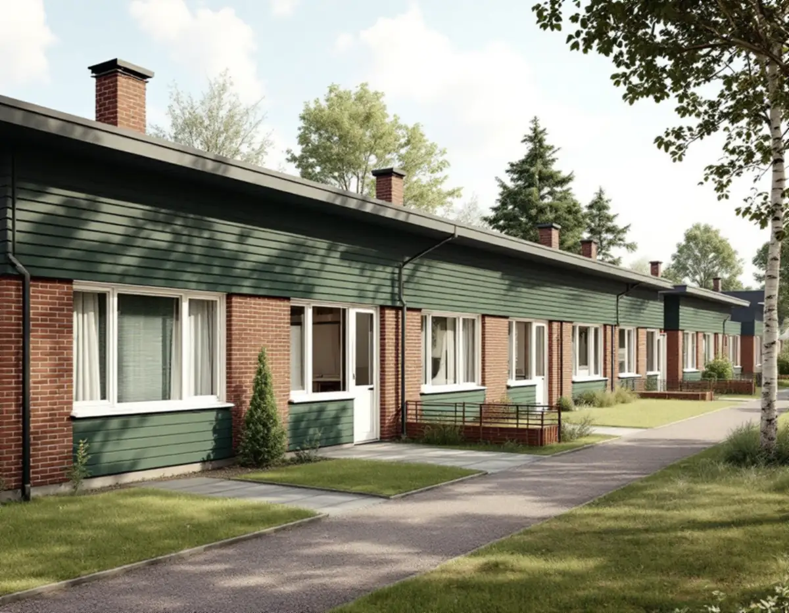
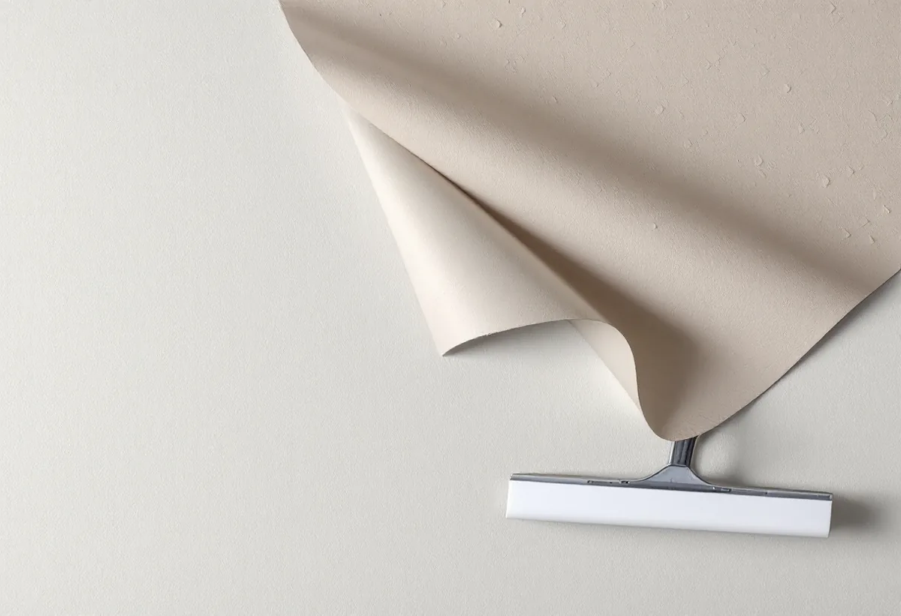
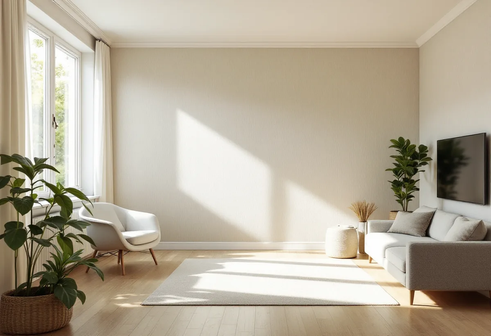

Platsbesök
Vi tittar på väggarna och provar om den gamla tapeten går att flossa.
En stor del av småhusen i Upplands Väsby är radhus och kedjehus från 1960- och 70-talet, och många av dem har bytt tapet flera gånger sedan dess. Geal Entreprenad AB tapetserar i radhus, kedjehus och villor i Upplands Väsby och börjar med att ta reda på vad som sitter på väggen i dag.

Kommunens kunskapsunderlag för kulturmiljö beskriver hur de östra kommundelarna växte fram med en stor andel småhus och radhus. Husen ligger i separata grupper längs säckgator, med bilfria gångstråk som binder ihop dem. Som exempel nämns Sjukyrkoberget, Skälby, Fresta och Odenslunda, men också Apoteksskogen i de centrala delarna.
Arkitekturen är rationell: enkla volymer i en eller två våningar, platta eller flacka tak och enluftsfönster utan spröjs. Utvändigt dominerar rött tegel, vitt kalkcementtegel och målad träpanel i färgstarka kulörer. Inomhus kan ett hus från den tiden ha fått ny tapet flera gånger, och väggarna kan då bära spår av flera decenniers val.

Hittar du en strukturtapet av plast på väggen finns det ett enkelt första steg. Svenska Byggnadsvårdsföreningen påpekar att de oftast var flossbara: det yttersta skiktet går att dra loss, och då får man en slätare yta att arbeta vidare med. Går det inte får man försöka få bort så mycket som möjligt.
Nästa fråga är vad tapeten sitter på. Det kan vara skivor som tretex eller masonit, och då avgör skivornas skick hur vi går vidare. Om huset hålls uppvärmt året runt kan plasttapeten enligt föreningen i princip få sitta kvar under ett nytt skikt, även om man gärna undviker plast i äldre hus.
Många väljer en målningsbar väv för att få en tålig yta i hall och trappa. Byggnadsvårdsföreningen svarar kort på frågan om vad man ska tänka på när väven sätts över en äldre tapet: inget mer än att underlaget är slätt och fast, precis som vid målning eller tapetsering.
Det låter enkelt, men det är just underlaget som tar tiden. Lösa kanter limmas eller skärs bort, skarvar som reser sig slipas ner och hål spacklas. Först när väggen är fast och jämn går vi vidare med väv, papperstapet eller en mönstrad tapet.
Kunskapsunderlaget påminner om att varsamhetskravet i plan- och bygglagen gäller vid såväl exteriöra som interiöra ändringar. För de flesta rum i ett radhus betyder det inget mer än att man tänker sig för, men fasta detaljer som originalsnickerier, inbyggda skåp och dörrar är en del av husets karaktär.
Vi tejpar och skyddar sådana delar i stället för att plocka ner dem i onödan. Om husen och kulörerna i Väsby utvändigt kan du läsa under målare i Upplands Väsby.
I ett radhus från 1960- och 70-talet är rummen ofta ljusa och enkla, med stora fönster mot trädgården. En tapet med lugnt mönster eller en enfärgad väv brukar fungera, men valet är ditt. Vi hjälper till med åtgången och med hur mönstret ska placeras på väggar med fönster och dörrar.
Ska golven göras samtidigt är det bra att tapetsera först och slipa sedan, eller skydda väggarna noga. Om golvslipning i Väsby kan du läsa under golvslipning i Upplands Väsby.

Vi tittar på väggarna och provar om den gamla tapeten går att flossa.
Rum för rum, med underarbete och tapetsering var för sig.
Golv, lister och snickerier täcks innan arbetet börjar.
Gamla lager tas ner eller fästs, skarvar slipas och hål spacklas.
Våderna sätts i lod med mönstret passat.
Vi går igenom rummen och sparar restbitar för lagning.
Skatteverket räknar tapetsering inomhus som rotarbete i den bostad du äger och själv använder, både i villa, radhus och bostadsrätt.
Avdraget är högst 30 procent av arbetskostnaden, högst 50 000 kronor per person och år och högst 75 000 kronor tillsammans med rutavdrag. Tapet, klister och resor ger inget avdrag. Geal drar av beloppet direkt på fakturan.
Antalet rum, om plasttapeten går att flossa eller måste rivas och hur mycket väggarna behöver jämnas. En överblick finns under målare. Efter ett gratis platsbesök får du ett skriftligt kostnadsförslag.
Fasad, fönster och invändig målning.
Målare i Stockholm →Takbyte, takbesiktning och plåtarbeten.
Takläggare i Upplands Väsby →Bollstanäs, Vilunda och Runby.
Takrenovering i Upplands Väsby →Potten, VA-avgiften och Bollstanäs.
Attefallshus i Upplands Väsby →Radhus, suterräng och samfälld VA.
Badrumsrenovering i Upplands Väsby →Karta, VA och tomtgräns.
Byggföretag i Upplands Väsby →Sekelskiftesvillorna längs Gamla vägen.
Fasadmålning i Upplands Väsby →Radhus från 70-talet och hus från bomässan.
Fasadrenovering i Upplands Väsby →Inflygning, trafik och tystare fönster i Väsby.
Fönsterbyte i Upplands Väsby →Kedjehusens fönster, kulör och beslag.
Fönsterrenovering i Upplands Väsby →Kedjehus, suterräng och radon.
Golvläggare i Upplands Väsby →Slipa trägolvet i radhuset på platta.
Golvslipning i Upplands Väsby →Radhus, kedjehus och atriumhus.
Köksrenovering i Upplands Väsby →Radhus, kedjehus och villor i Väsby.
Målare i Upplands Väsby →Rännor, stuprör och radhusplåt i Väsby.
Plåtslagare i Upplands Väsby →Altan, plank och förråd vid radhus och kedjehus.
Snickare i Upplands Väsby →Nytt tak, solceller och väderradarn.
Takbyte i Upplands Väsby →Radhus, kedjehus och utpekade områden.
Tillbyggnad i Upplands Väsby →Äldre villor, radhus och varsamhet.
Totalrenovering i Upplands Väsby →